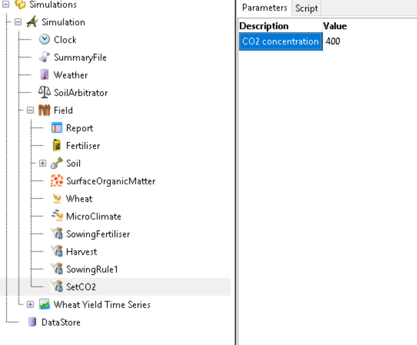

Chapter 1 CO2
The default CO2 is 350 ppm if it is not specified. CO2 might require to change in the case of simulations for climate change or FACE experiment.
The CO2 can be set using event PreparingNewWeatherData.
- Right click the
Field. - Click the context menu
Add model. - Find the
Managermodel and click to add it underField. - Change the
Managerto any names (e.g.SetCO2). - Copy the script below into tab
Script. - Update the value of CO2 in the tab
Parameters.
using Models.Climate;
using System;
using Models.Core;
using APSIM.Shared.Utilities;
using System.Collections.Generic;
using System.Text;
using Models.PMF;
using Models;
using System.Xml.Serialization;
namespace Models
{
[Serializable]
[System.Xml.Serialization.XmlInclude(typeof(Model))]
public class Script : Model
{
[Link] Weather Weather;
[Link] Clock Clock;
[Description("CO2 concentration")]
public double CO2 { get; set; }
[EventSubscribe("PreparingNewWeatherData")]
private void OnPreparingNewWeatherData(object sender, EventArgs e)
{
Weather.CO2 = CO2;
}
}
}See figure below for the example script. 
An example apsimx file can be found from here. Right click to download it.
See Experiment ArizonaFACE92 and ArizonaFACE93 in the wheat validation test for more examples.